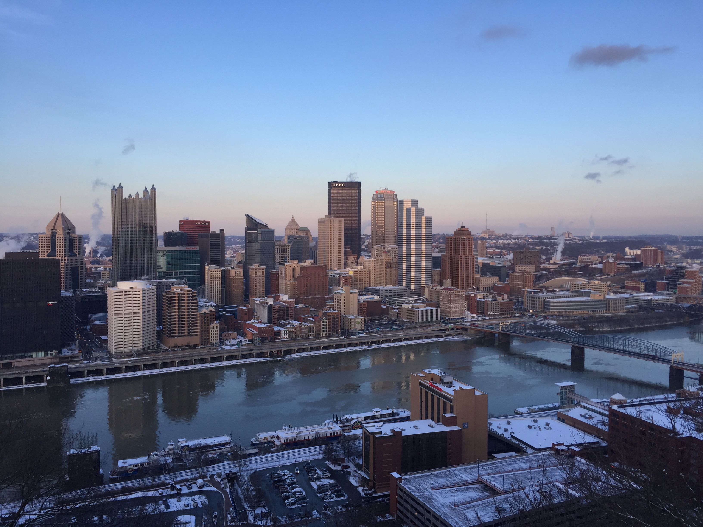
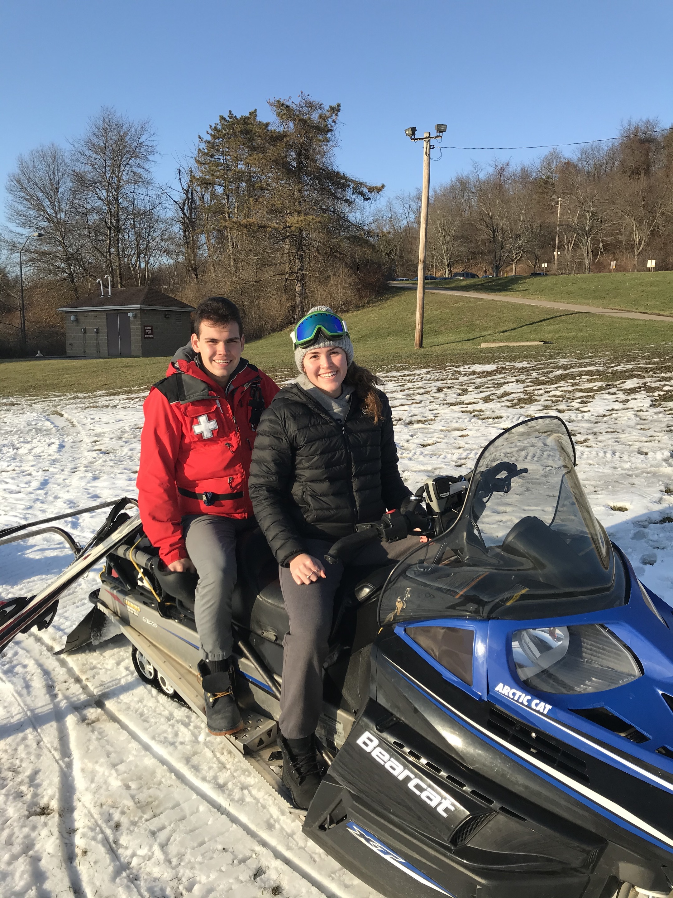

And I Study Electrical and Computer Engineering (ECE)
Field or Career
My future career will be in medicine. In addition, I will use my ECE skills to do research in medical device development. These two carrer paths combined will improve the world by improving quality of life of patients I will treat, and improving the lives of many more through medical device development/research.
I knew that I wanted to pursue a career in medicine ever since I tore my ACL skiing when I was 14. I was fascinated with both the anatomy of the knee and how the surgeon was able to repair my knee. A medical mission trip to Aguacate, Guatemala (pictured below) and many hours of shadowing physicians amplified my passion for medicine.
Family and Home

Family is the group of people who love and care for me, who do everything in their power to see me succeed. They are the group of people who I spend the most time around and who play the biggest role in shaping my values.
Home to me is Pittsburgh. Thinking of Pittsburgh makes me think about how hard my parents worked to get here from Romania, which inspires me to continue to work hard to take advantage of the opportunities they provided me with.
Entertainment
I use media in many ways to inspire me. The film "Free Solo" helped me realize that tasks that are seemingly daunting and impossible (such as climbing the world's hardest wall without a rope), are attainable if you put a lot of hard work into accomplishing that task. Although I do not climb at that level, this is very applicable to all parts of life: to academics, to mountain biking, and to skiing.
I also watch skiing and mountian biking edits in general which inspire me to either go places or try new things on skis or on the bike. Additionally, I like watching shows and movies to explore the way people think. Some shows/movies that I enjoy watching are: Mindhunter, Ozark, The Dead Poet's Society, The Shawshank Redemption, and The Godfather to name a few.
Community
My first community is the skiing community. Having skied my whole life (since I was 1 1/2), I feel a strong attraction to this community. I am happy that I get to give back to this community by being a Ski Patroller, providing pre-hospital care to the injured skiers.
Another community that I am part of is the outdoors community. I would consider this an important community because there are many like-minded people who I may just be meeting for the first time, but we have something in common with our love for the outdoors.
Finally, I am a part of the Engineering community. I value this community becuase it places me amoungst people who all have very similar goals: learn as much technical information to solve problems in the world to improve the quality of life.

School
My schooling has led me to the point I am now. I learned how to really study senior year of high school in an Organic Chemsitry class, and that has helped me gain a lot of sucess throughout college. I graduated on the biosciences track in high school, and never thought that I would be doing something with computers or electricity, but that is the way life is! Unexpected! My education has helped me secure research positions in pediatric cardiac arrest, and an internship this summer (2020) with Medtronic, a medical device company. I still have the same goal I did in high school, though: to be a Pediatric Emergency Medicine Physician.